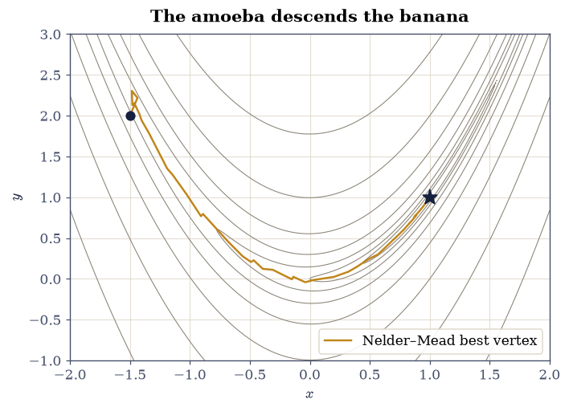
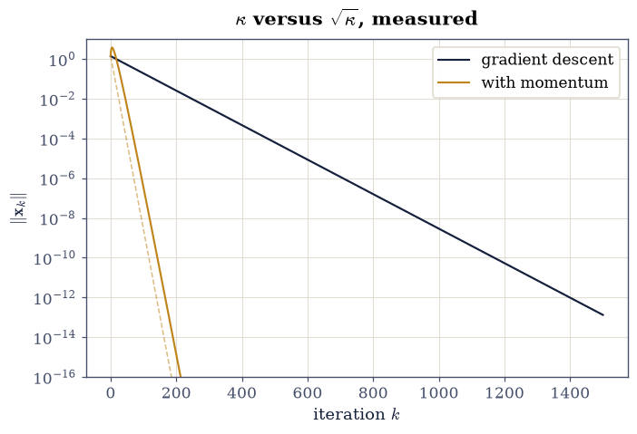
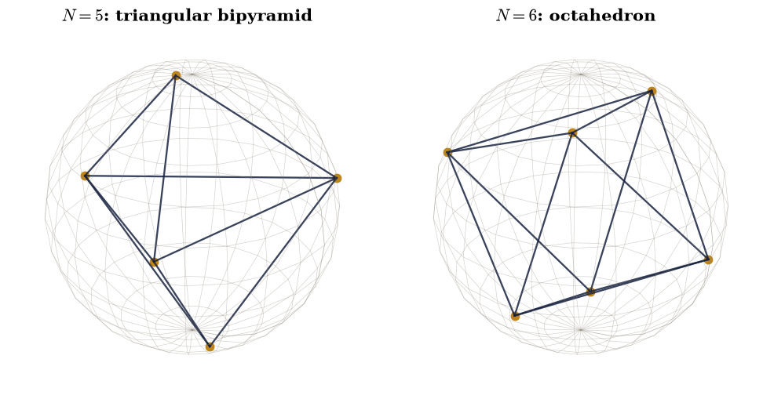

0.13 Optimization: Golden Sections, Amoebas, and Gradient Descent#
Notebook overview#
Half of computational physics is secretly this notebook. A stable
equilibrium is a minimum of the potential energy; a least-squares fit
(§0.8) is a minimum of \(\chi^2\); the
variational method that will carry
§6.22 rests on
minimizing an energy expectation over trial wavefunctions. Every one
of those computations ends with the same question — where is the
bottom? — and this notebook is where the course answers it
systematically, building the machinery that scipy.optimize wraps.
The subject splits along two axes. Dimension one or many: in one
dimension a minimum can be bracketed and cornered as surely as
§0.2 cornered a root, while in many dimensions
nothing can be fenced in and every method is a strategy for walking
downhill. Derivatives or none: with a gradient in hand, steepest
descent works — at a speed set, we will measure, by the condition
number that §0.4 taught us to fear — and
without one, the Nelder–Mead simplex oozes its way down regardless.
We build both from scratch, certify them against scipy, and close
with the honest problem of global optimization, where the only
guarantee anyone can sell is a good set of restarts. Nocedal and
Wright [NW06] and Numerical Recipes [PTVF07]
are the standing references.
A note on reading the checks in this notebook: a validation compares a result to an expected physical fact. A ✗ does not by itself mean the answer is wrong; it means the output did not match what the check expected, which may be a genuine error, a different-but-valid convention, or too tight a tolerance. Treat a ✗ as a prompt to locate the discrepancy. Passing is strong evidence, not proof.
Theory in brief#
Bracketing and the golden section. A minimum is trapped by a triplet \(a < m < b\) with \(f(m)\) below both ends. To shrink the bracket we probe one interior point and discard one end — and if we demand that the two possible surviving brackets have equal width, and that each round reuse the previous round’s interior point, the probe positions are forced: self-similarity fixes the proportion, and the proportion is golden,
a guaranteed linear convergence with no derivative and no luck
required. But there is a floor. Near the minimum,
\(f(x) \approx f(x_*) + \tfrac12 f''(x_*)(x - x_*)^2\), and once the
quadratic term drops below machine precision of \(f(x_*)\) the
function is computationally flat: no minimizer of function values can
locate \(x_*\) better than about \(\sqrt{\varepsilon}\,\) (relative), the
square root of the \(10^{-16}\) that §0.1
established. Roots can be pinned to \(\varepsilon\); minima only to
\(\sqrt\varepsilon\). Brent’s method (the engine of
scipy.optimize.minimize_scalar) reaches that floor faster by fitting
parabolas, with the golden section as its safety net
[PTVF07].
The amoeba. In \(d\) dimensions, Nelder and Mead [NM65]
maintain a simplex of \(d+1\) points and improve its worst vertex by
trying, in order: reflection through the centroid of the others,
expansion if the reflection excelled, contraction if it disappointed,
and a whole-simplex shrink as the last resort. No gradient, no line
search — just a polytope oozing downhill, which is why everyone calls
it the amoeba. It is the default when derivatives are unavailable or
untrustworthy, and it is scipy.optimize.minimize(method="Nelder-Mead").
Gradient descent and the condition number. With a gradient, \(x_{k+1} = x_k - \alpha \nabla f(x_k)\). On the model quadratic \(f = \tfrac12 x^{\!\top}\! A\, x\) with Hessian eigenvalues in \([\lambda_{\min}, \lambda_{\max}]\) and the optimal fixed step \(\alpha = 2/(\lambda_{\min} + \lambda_{\max})\), the error contracts by a fixed factor per step,
which is the condition number of §0.4 ruling a third subject: for \(\kappa = 100\) each step removes only \(2\%\) of the error, because the step size the steep direction tolerates is far too timid for the shallow one, and the iterate zig-zags down the valley. Polyak’s remedy [Pol64] is momentum (the “heavy ball”): remember the previous displacement, \(x_{k+1} = x_k - \alpha \nabla f(x_k) + \beta\,(x_k - x_{k-1})\), and with the optimal \(\alpha = 4/(\sqrt{\lambda_{\max}} + \sqrt{\lambda_{\min}})^2\) and \(\beta = \bigl((\sqrt\kappa - 1)/(\sqrt\kappa + 1)\bigr)^2\) the rate improves to
the condition number’s square root — the difference between \(2\%\) and \(18\%\) per step at \(\kappa = 100\), and the reason essentially all large-scale machine learning runs on gradient descent with momentum.
Local versus global. Everything above finds the nearest valley. When a landscape has many — and the energy of \(N\) interacting particles almost always does — the plain, honest tool is restarts: minimize from many random starting points and keep the best. Exercise 4 does exactly that on a problem with a century of history, Thomson’s \(N\) electrons on a sphere [Tho04], minimizing
whose minima are checkable against published values to nine digits.
Setup#
Reduced units throughout (the Lennard-Jones \(\varepsilon = \sigma =
1\), unit charges and radii in the Thomson problem). The random
generator is seeded; every restart below is reproducible. What Setup
holds is the test bed and the constants: the Lennard-Jones pair
potential whose minimum is known in closed form, the golden ratio, and
the seeded generator. The minimizers are not here — you write
golden_section in Exercise 1 and nelder_mead in Exercise 2, and the
descent loops of Exercises 3 to 5 are written where they are used.
The Setup below holds this notebook’s data and instruments — nothing you are asked to build. It is collapsed so the building stays yours; expand it whenever you want the details.
Exercise 1 — The golden section and the √ε floor#
The one-dimensional workhorse first, on a function whose minimum is known exactly: the Setup’s Lennard-Jones pair potential, with \(r_* = 2^{1/6}\). Two predictions of the theory section stand ready to be measured against — Eq. 76, which fixes the shrink at exactly \(\varphi - 1\) per iteration, and the flatness floor, which says a minimizer of function values stalls near \(\sqrt\varepsilon\) however many evaluations it is given.
Part a) Write golden_section(f, a, b, n_iter): probe the bracket
at the two golden points \(b - (\varphi - 1)(b - a)\) and
\(a + (\varphi - 1)(b - a)\), discard the end whose neighbouring probe is
the higher of the two, and repeat — carrying the surviving interior
point over so each iteration costs exactly one new evaluation of \(f\).
Return the final bracket’s midpoint and the array of bracket widths
(one entry per iteration, plus the initial width).
Write this one yourself — the implementation is the lesson.
Part b) Run it on lj over the bracket \([0.9, 2.0]\)
for \(80\) iterations. Verify the located minimum agrees with \(2^{1/6}\)
to atol=1e-7, and verify Eq. 76 in action: the mean of
the first \(40\) successive width ratios equals \(\varphi - 1\) to
rtol=1e-6.
Part c) The floor. Run golden_section again for \(200\) iterations —
two and a half times the work — and verify the answer does not move
(the two midpoints agree to \(10^{-12}\)): by iteration \(80\) the bracket
is already below that flatness floor, and no number of further
function evaluations can buy another digit. Minima
are \(\sqrt\varepsilon\) objects; treat any minimizer’s last eight
digits with suspicion.
Part d) The professional version: minimize lj with
scipy.optimize.minimize_scalar (method="brent", bracket
\((0.9, 1.1, 2.0)\)) and verify Brent’s parabolic acceleration reaches
error below \(10^{-6}\) in fewer than 30 function evaluations — the
golden section’s guarantee, at a fraction of its cost.
golden section, 80 iters : 1.122462047015
exact 2^(1/6) : 1.122462048309
mean width ratio : 0.6180339887 (φ − 1 = 0.6180339887)
golden section, 200 iters: 1.122462047015 (unchanged)
Brent: x = 1.1224620402 after 16 evaluations
✓ golden-section search pins the Lennard-Jones minimum at 2^(1/6) to seven digits [error 1.3e-09]
✓ and the bracket shrinks by exactly φ − 1 per iteration: self-similarity made the proportion golden [got [0.61803399] vs expected [0.61803399] (rtol=1e-06, atol=1e-09)]
✓ 120 extra iterations buy NOTHING: the √ε flatness floor is already reached — minima are half-precision objects [midpoints differ by 0.0e+00]
✓ Brent's parabolic acceleration reaches the same floor in a fraction of the evaluations [error 8.2e-09 in 16 calls]
True
Exercise 2 — The amoeba, from scratch#
Now many dimensions without derivatives. The test landscape is Rosenbrock’s banana \(f(x, y) = (1 - x)^2 + 100\,(y - x^2)^2\) — a curved, flat-bottomed valley whose minimum \(f(1,1) = 0\) is easy to state and famously tedious to reach.
Part a) Write rosenbrock(p) and then nelder_mead(f, x0, n_iter=300, step=0.5): keep a simplex of \(d + 1\) vertices (the start
plus one offset of step along each axis) and each iteration replace
its worst vertex by the four standard moves in order — reflection
through the centroid of the others, expansion if the reflection
excelled, contraction if it disappointed, and a whole-simplex shrink
toward the best vertex as the last resort (coefficients \(1, 2,
\tfrac12, \tfrac12\)) — recording the best vertex each iteration.
Write this one yourself — the implementation is the lesson.
Part b) Run it from \((-1.5, 2.0)\) with initial simplex step \(0.5\)
for \(300\) iterations and verify it lands on \((1, 1)\) to atol=1e-5
with \(f < 10^{-10}\).
Part c) Certify against the reference: run
scipy.optimize.minimize(method="Nelder-Mead") from the same start
and verify it agrees with \((1, 1)\) to the same tolerance. Plot the
landscape’s contours and our simplex’s best-vertex path: the amoeba
slides into the valley in a few dozen moves and then feels its way
along the curved floor.
our Nelder–Mead : [1. 1.], f = 0.00e+00
scipy reference : [1. 1.], f = 2.43e-22 (138 iterations)

Fig. 68 The Rosenbrock landscape \((1-x)^2 + 100\,(y-x^2)^2\) (grey contours, logarithmically spaced) with the from-scratch Nelder–Mead simplex’s best-vertex path (amber) from the start \((-1.5, 2)\) (ink dot) to the minimum \((1, 1)\) (ink star). The amoeba needs no derivatives: it drops into the curved valley quickly, then works along its nearly flat floor — the shape of landscape on which plain gradient descent (Exercise 3) crawls.#
✓ the from-scratch amoeba finds Rosenbrock's minimum (1, 1) with no derivative information at all [x = [1. 1.], f = 0.0e+00]
✓ and scipy's Nelder-Mead, from the same start, certifies the answer [x = [1. 1.], f = 2.4e-22]
✓ two independent implementations of the same four moves, one answer [gap 2.0e-11]
True
Exercise 3 — Gradient descent pays the condition number#
Eq. 77 and Eq. 78 are quantitative promises, and a two-dimensional quadratic with Hessian eigenvalues \(1\) and \(100\) (so \(\kappa = 100\)) makes them measurable.
Part a) Run gradient descent on \(f = \tfrac12(x_1^2 + 100 x_2^2)\)
from \((1, 1)\) with the optimal fixed step \(\alpha = 2/101\) for \(1500\)
iterations. Fit (with numpy.polyfit) the slope of
\(\ln\Vert x_k \Vert\) over iterations \(500\)–\(1400\) and verify the
measured per-step contraction equals \((\kappa - 1)/(\kappa + 1) =
99/101\) to rtol=1e-6 — theory to six digits.
Part b) Add Polyak momentum with the optimal \(\alpha = 4/(\sqrt{
\lambda_{\max}} + \sqrt{\lambda_{\min}})^2\) and \(\beta = \bigl((\sqrt
\kappa - 1)/(\sqrt\kappa + 1)\bigr)^2\), run \(400\) iterations, and
verify the measured rate matches \((\sqrt\kappa - 1)/(\sqrt\kappa + 1)
= 9/11\) to rtol=1e-2 (the heavy ball oscillates as it converges, so
the fitted rate carries more noise). Verify the practical payoff:
counting iterations to bring \(\Vert x_k \Vert\) below \(10^{-8}\),
momentum wins by better than a factor of \(5\).
Part c) The cautionary coda. Run plain gradient descent on Rosenbrock from \((-1.5, 2.0)\) with step \(10^{-3}\) (about the largest stable choice) for \(20{,}000\) iterations and verify the crawl: the function value falls below \(10^{-6}\), yet the iterate is still farther than \(10^{-4}\) from \((1, 1)\) — twenty thousand gradient evaluations against the amoeba’s few hundred function calls. On narrow curved valleys, curvature-blind steps pay Eq. 77’s price at every turn; this is the observation that leads to conjugate gradients and quasi-Newton methods [NW06].
GD rate : measured 0.9801980198, theory 0.9801980198
momentum rate: measured 0.821871, theory 0.818182
iterations to 1e-8: GD 939, momentum 119 (factor 7.9)
Rosenbrock crawl: f = 3.16e-08, distance from (1,1) = 3.98e-04 after 20,000 steps

Fig. 69 Convergence of gradient descent (ink) and Polyak momentum (amber) on the quadratic \(\frac{1}{2}(x_1^2 + 100\,x_2^2)\), error norm against iteration on a logarithmic axis, with the theoretical rates \((\kappa-1)/(\kappa+1) = 99/101\) and \((\sqrt\kappa-1)/(\sqrt\kappa+1) = 9/11\) as dashed guides. Both measured lines sit on their predictions: at condition number \(\kappa = 100\), momentum converges roughly eight times faster by paying \(\sqrt\kappa\) where gradient descent pays \(\kappa\). The momentum curve’s brief initial rise above its starting error is the heavy ball’s real overshoot, not an artifact.#
✓ gradient descent contracts by (κ−1)/(κ+1) per step, to six digits: the condition number of §0.4 now rules optimization [got [0.98019802] vs expected [0.98019802] (rtol=1e-06, atol=1e-09)]
✓ and the heavy ball contracts by (√κ−1)/(√κ+1): momentum turns the condition number into its square root [got [0.82187144] vs expected [0.81818182] (rtol=0.01, atol=1e-09)]
✓ the square root is worth a factor of about eight in iterations at κ = 100 [939 vs 119 iterations to reach 1e-8]
✓ on Rosenbrock's curved valley, 20,000 curvature-blind steps still have not arrived: the case for smarter methods [f = 3.2e-08 but ‖x − x*‖ = 4.0e-04]
True
Exercise 4 — The Thomson problem: restarts against many valleys#
Global optimization, on a problem with real physics pedigree: \(N\) unit charges confined to a unit sphere, minimizing Eq. 79. Thomson posed it in 1904 for his model of the atom [Tho04]; its minima for small \(N\) are known to many digits, which makes it the perfect proving ground for the restart strategy.
Part a) Parametrize each charge by spherical angles
\((\theta_i, \phi_i)\), minimize the energy with
scipy.optimize.minimize (method="BFGS") from \(8\) random starts
for each \(N = 2, \dots, 6\), keep the best, and verify all five
ground-state energies against the published values
\(0.5\), \(\sqrt 3\), \(3.674234614\), \(6.474691495\), \(9.985281374\)
to rtol=1e-8.
Part b) Geometry from optimization: verify the \(N = 4\) minimizer
is a regular tetrahedron — all six pairwise distances equal (spread
below \(10^{-4}\)) with mean \(\sqrt{8/3}\) (rtol=1e-4) — and plot the
\(N = 5\) and \(N = 6\) arrangements: the triangular bipyramid and the
octahedron, found by nothing but restarts and descent.
N = 2: E = 0.500000000 (published 0.500000000)
N = 3: E = 1.732050808 (published 1.732050808)
N = 4: E = 3.674234614 (published 3.674234614)
N = 5: E = 6.474691495 (published 6.474691495)
N = 6: E = 9.985281374 (published 9.985281374)
N = 4 pair distances: spread 3.0e-06, mean 1.63299316 (√(8/3) = 1.63299316)

Fig. 70 Ground states of the Thomson problem found by BFGS with eight random restarts: five charges arrange into a triangular bipyramid (left, energy \(6.4747\)) and six into a regular octahedron (right, energy \(9.9853\)), matching the published minima to nine digits. Nothing about the symmetry was assumed — the polyhedra emerge from descending Eq. 79 from random starting points and keeping the best result.#
✓ eight restarts of BFGS recover all five published Thomson ground states to nine digits: the honest recipe for many valleys [max|Δ| = 3.10409e-10 (rtol=1e-08, atol=1e-09)]
✓ the N = 4 minimizer has all six pair distances equal: the regular tetrahedron, discovered rather than assumed [spread 3.0e-06]
✓ with the exact tetrahedral edge length √(8/3) inscribed in the unit sphere [got [1.63299316] vs expected [1.63299316] (rtol=0.0001, atol=1e-09)]
True
Exercise 5 — Closing the circle: fitting is optimization#
§0.8 solved least squares by linear algebra — the normal equations, one shot, no iteration. But the \(\chi^2\) it minimized is just a function of the parameters, and this notebook minimizes functions.
Part a) Generate \(30\) noisy samples of \(2.5x^2 - 1.2x + 0.7\) on
\([0, 1]\) (Gaussian noise, \(\sigma = 0.05\), the seeded generator),
and minimize \(\chi^2(\mathbf p) = \sum_i (p(x_i) - y_i)^2\) over
quadratic coefficients with the Exercise 2 machinery
(scipy.optimize.minimize, method="Nelder-Mead", tight
tolerances). Verify the amoeba’s three coefficients agree with
numpy.polyfit’s to atol=1e-6, and the two \(\chi^2\) values to
atol=1e-8: the linear-algebra route and the walking-downhill route
meet at the same bottom, because they are descriptions of the same
minimum.
This is why the distinction matters in practice: when a model is
linear in its parameters, §0.8’s
one-shot algebra is exact and instant — and when it is not (fitting
a decay rate, a resonance width, a phase), there is no algebraic
shortcut, and scipy.optimize.curve_fit is quietly running exactly
the kind of iterative descent built in this notebook.
polyfit : [ 2.35290379 -1.06933965 0.66907558]
Nelder-Mead: [ 2.3529038 -1.06933965 0.66907558]
coefficient gap 1.07e-08, χ² gap 2.78e-17
✓ the amoeba walking down the χ² surface lands on numpy.polyfit's normal-equation answer: fitting IS optimization [max coefficient gap 1.1e-08]
✓ and the two χ² minima are the same number: one bottom, two routes to it [gap 2.8e-17]
True
Notebook summary#
The golden section delivered its guarantee: the Lennard-Jones minimum to seven digits, bracket widths shrinking by exactly \(\varphi - 1\) per step — and \(120\) extra iterations bought nothing, because minima are \(\sqrt\varepsilon\) objects. Brent reached the same floor in \(16\) evaluations.
The from-scratch Nelder–Mead amoeba found Rosenbrock’s \((1, 1)\) with no derivatives, matching
scipy’s implementation of the same four moves.Gradient descent paid the condition number to six digits — contraction \((\kappa - 1)/(\kappa + 1)\) — and Polyak momentum paid only its square root, an eight-fold saving at \(\kappa = 100\); on Rosenbrock’s curved valley, \(20{,}000\) curvature-blind steps still had not arrived.
Eight random restarts of BFGS recovered all five published Thomson ground states to nine digits, and the \(N = 4\) minimizer was the regular tetrahedron (\(\sqrt{8/3}\) edges, discovered not assumed).
The amoeba descending the \(\chi^2\) surface landed on
numpy.polyfit’s normal-equation answer exactly: the fits of §0.8 were this notebook’s subject all along.
Outlook#
Curvature-aware descent. The Rosenbrock crawl is cured by using second-derivative information: conjugate gradients, Newton, and the quasi-Newton BFGS family that Exercise 4 already leaned on [NW06] — which build a Hessian picture from gradient history alone.
The variational principle. The course’s most consequential minimization is quantum: §6.22 minimizes \(\langle\psi_\alpha|H|\psi_\alpha\rangle\) over trial wavefunctions, with the guarantee that every value is an upper bound on the ground-state energy — this notebook’s machinery, pointed at the Schrödinger equation.
Stochastic escape. Restarts are one answer to many valleys; another is to accept occasional uphill moves with a temperature-controlled probability and cool slowly — simulated annealing, which is the Metropolis engine of §5.8 run as an optimizer.
Learning as descent. Training a neural network is minimizing a loss over millions of parameters with noisy gradients — stochastic gradient descent with momentum, Eq. 78 at industrial scale. The mathematics of this notebook is, at this writing, the mathematics running inside every large model.
References#
John A. Nelder and Roger Mead. A simplex method for function minimization. The Computer Journal, 7(4):308–313, 1965. doi:10.1093/comjnl/7.4.308.
Jorge Nocedal and Stephen J. Wright. Numerical Optimization. Springer, 2 edition, 2006. doi:10.1007/978-0-387-40065-5.
Boris T. Polyak. Some methods of speeding up the convergence of iteration methods. USSR Computational Mathematics and Mathematical Physics, 4(5):1–17, 1964. doi:10.1016/0041-5553(64)90137-5.
William H. Press, Saul A. Teukolsky, William T. Vetterling, and Brian P. Flannery. Numerical Recipes: The Art of Scientific Computing. Cambridge University Press, 3 edition, 2007.
Joseph John Thomson. On the structure of the atom: an investigation of the stability and periods of oscillation of a number of corpuscles arranged at equal intervals around the circumference of a circle. Philosophical Magazine, Series 6, 7(39):237–265, 1904. doi:10.1080/14786440409463107.